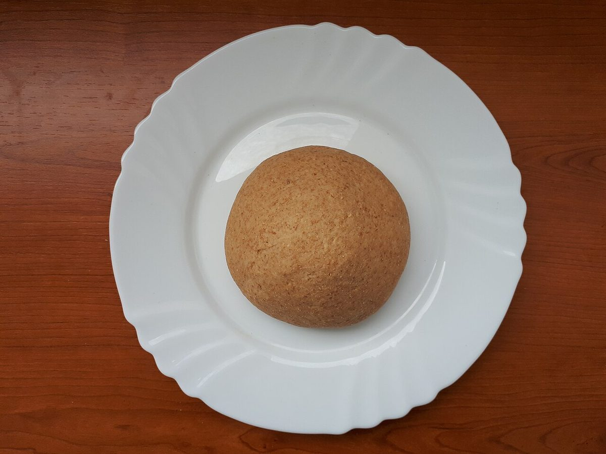
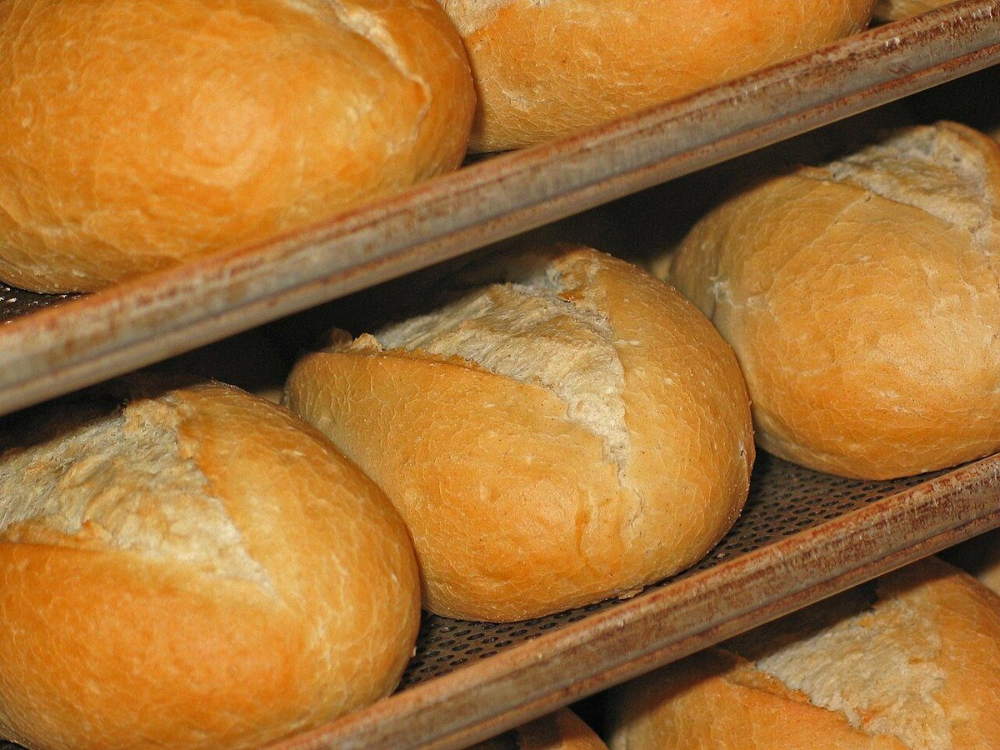
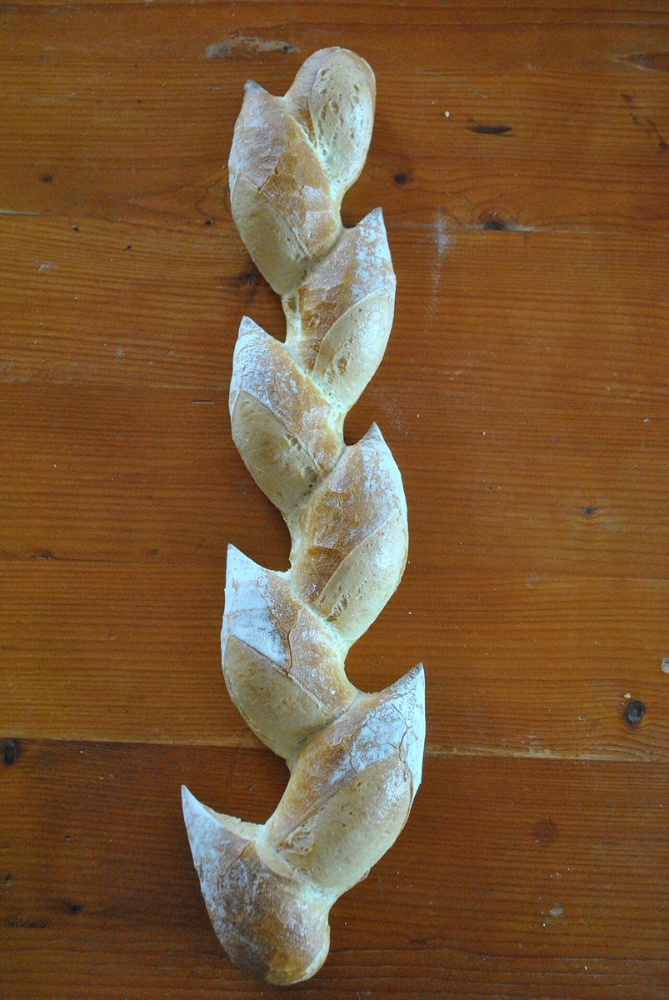

BAKERY · MURORAN, HOKKAIDO
エンジン
ベーグル
北海道室蘭市輪西町にあるパン屋「エンジンベーグル」のご案内ページです。営業時間やメニューなど詳しいことは準備中。まずはInstagramをのぞいてみてください。

ASSOCIATION
屋号の字面から、「四行程」を連想しました。
「エンジン」という言葉から、制作側はエンジンの四行程(吸入・圧縮・燃焼・排気)を連想し、このサイトの5ページをそれになぞらえて並べています。屋号の由来はわかりませんし、お店の理念や商品とは無関係の、制作側の連想です。
サイト内の使い方: ホーム=始動、店のこと=吸入、メニュー=圧縮、口コミ=燃焼、アクセス=排気。ページ上部の4つの帯が、いまどの行程にいるかを示します。
- 吸入INTAKE
- 圧縮COMPRESSION
- 燃焼POWER
- 排気EXHAUST
01
吸入ひとまず、取り込む
広がるのは、麦と粉の写真のイメージです。お店の写真ではありません。


02
圧縮ぎゅっと、まとめる
生地をまとめるイメージの写真を2枚。商品の写真ではありません。


03
燃焼ぱっと、火がつく
炎の写真は、窯や火のイメージです。お店の設備を示すものではありません。


04
排気ふうっと、ひと息
焼きあがったパンのイメージ写真。お店で扱う商品とは関係ありません。



INFORMATION
ご案内(確認できたものだけ)
| 所在地 | 〒050-0085 北海道室蘭市輪西町1丁目36-12 |
|---|---|
| 電話 | なし |
| 営業時間 | 準備中 |
| 定休日 | 準備中 |
| ご予約 | 準備中 |
| 駐車場 | 準備中 |
| SNS | Instagram @enjin_bagle |